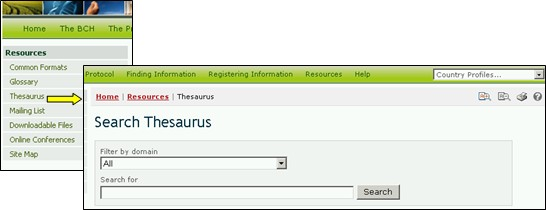

يعرض المكنز قائمة بالمصطلحات المعرّفة سلفاً وبالمترادفات ذات الصلة، أو ”المفردات اللغوية المضبوطة“ المستخدمة في سياق محدّدة. وتستخدم هذه المصطلحات للتسجيل والبحث من أجل المعلومات الموجودة في قواعد بيانات غرفة تبادل معلومات السلامة الأحيائية.
عن طريق استخدام الوصلة في صفحة الموارد، ينفذ المستعمِل إلى صفحة مجالات المكنز التي تعرض على رأسها بحث وتحتها قائمة بمجالات المصطلحات مرتبة ترتيباً أبجدياً.

صورة 46

صورة 47
وتعرض آلية البحث هذه قائمة اختيارات منسدلة من أجل اختيار مجالات داخل المكنز، وتعرض إطاراً لاستخدام كلمات دليلية أو مصطلحات في البحث. ويُدخل المستعمل المجال و/أو الكلمة (الكلمات) الدليلية موضع الاهتمام ويختار ازرار البحث.
ويتم في قائمة النتائج اختيار مصطلح من عمود تعريف المصطلح (Term ID) للحصول على مزيد من المعلومات حول استخدامه في البوابة المركزية لغرفة تبادل معلومات السلامة الأحيائية. وهذا يحمل المستعمل إلى سجل وصف المصطلح الذي يقدم تفاصيل بشأن معنى المصطلح وطريقة استخدامه في البوابة المركزية لغرفة تبادل معلومات السلامة الأحيائية، بما في ذلك الاستخدامات الأوسع والأضيق والمفضلة للمصطلح والترجمات إلى لغات الأمم المتحدة الست.
مثال. إذا رغب مستعمل في فهم استخدام المصطلح ”عبر الحدود“في أنشطة تتصل بالبروتوكول، يُدخل المستعمل مصطلحات البحث All في إطار برنامج المعالجة (filter by domain) وكلمة transboundary (عبر الحدود) في إطار البحث في صفحة البحث في المكنز. واختيار ازرار البحث Search سوف يعرض قائمة بسجلات تبيّن كيف يستخدم مصطلح transboundary (عبر الحدود) في مختلف المجالات داخل البوابة المركزية لغرفة تبادل معلومات السلامة الأحيائية. وحددت نتائج البحث (في كانون الثاني/يناير 2008) خمسة استخدامات للمصطلح في أربعة مجالات داخل غرفة تبادل معلومات السلامة الأحيائية.

صورة 48
قائمة مجالات العبارات توفر الوصول الى قائمة بالعبارات مرتبة ابجديا مستعملة في كل مجال. يؤمن مفتاح للاشارة الى اية عبارة هي "المفضلة"، غير مفضلة او "تتعلق ب"

صورة 49
واختيار مصطلح من قائمة شجرة المصطلحات في صفحة مجالات المكنز يحمل المستعمل إلى سجل وصف المصطلح. ويعرض هذا السجل تفاصيل بشأن معنى المصطلح وكيفية استخدامه في غرفة تبادل معلومات السلامة الإحيائية، بما في ذلك الاستخدامات الأوسع والأضيق والمفضلة للمصطلح والترجمات إلى لغات الأمم المتحدة الست. وفي إطار وصف المصطلح، يعتبر مصطلح الاستخدام المفضل في المفردات اللغوية المضبوطة مصطلحاً جرى اختياره من بين مترادفعات لكي يستخدم لأغراض الفهرسة والاسترجاع. وعلى سبيل المثال، يعتبر مصطلح الذرة الصفراء (maize) هو مصطلح الاستخدام المفضل على مصطلح الذرة (corn) في غرفة تبادل معلومات السلامة الأحيائية.